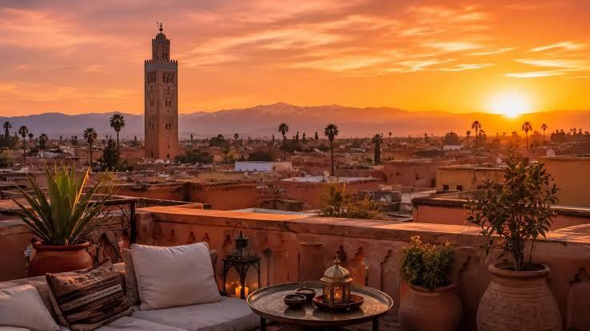
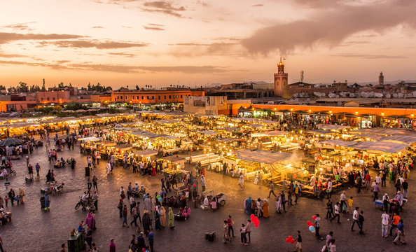

摩洛哥 MOROCCO
馬拉喀什 Marrakesh
阿爾摩拉維德王朝於 1070 年建城，紅土城牆圍住的是非洲最熱鬧的廣場之一。德吉瑪廣場入夜後變成巨大的露天劇場，說書人、樂手與大排檔各據一角；白天則由果汁攤與香料販子接手。舊城 1985 年列入世界遺產。
閱讀封面故事VOL.01 · 2026


「在同一個地方住上一千年，人就會開始用石頭說話。」
編輯部 · 卷首語
編者的話
這四個地方沒有太多共同點，除了它們都讓人在同一塊土地上住了很久。馬拉喀什的紅土城牆、撒馬爾罕的鈷藍瓷磚、瓦拉納西的河壇石階、復活節島的摩艾石像——四種完全不同的材料，記錄的其實是同一件事：人如何決定要留下來。
我們不做排行榜，也不寫「一生必去」。每一篇專題只回答一個問題：這個地方為什麼長成今天的樣子。知道答案之後，走在它的街道上就會看到完全不同的東西。
本刊影片
如影片無法播放，請以本機伺服器開啟，或直接前往 YouTube 觀看。